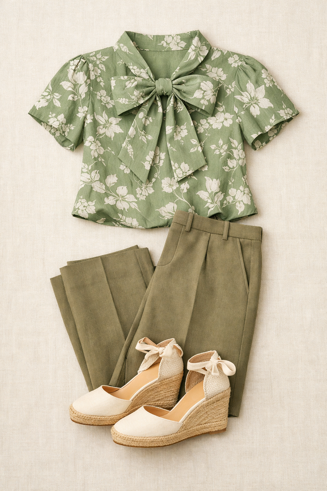
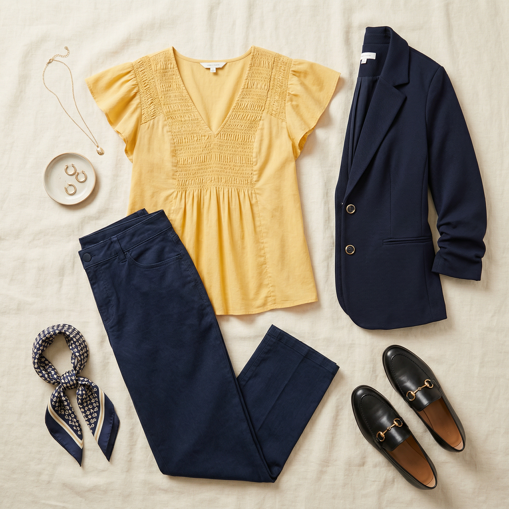
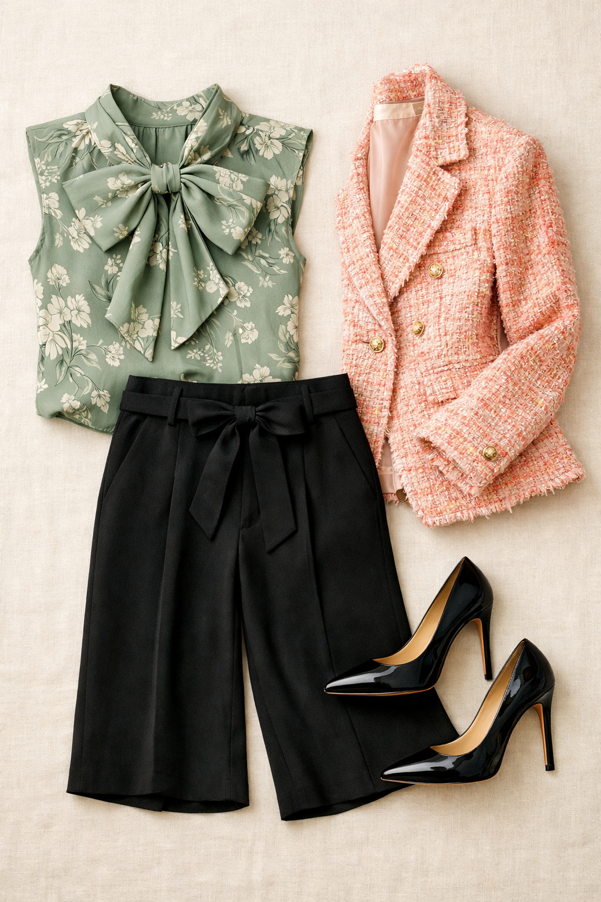

Ann Taylor
Floral Bow Blouse — Aqua Foam
$109
A sage green botanical floral with a statement bow neckline — fresh, polished, and completely distinctive. Aqua Foam is a sophisticated sage-green that transcends trends. The bow neckline adds a luxe editorial touch without veering precious.
Shop NowWhy This Pick
The sage green floral works as a neutral — it pairs back to nearly every bottom in the wardrobe. The statement bow neckline makes it a true hero piece that does the styling work for you. Three completely different looks from one blouse.
3 Ways to Wear It
Styled with pieces already in your closet

Look 1 — Green Tonal Editorial
Dried Moss Jayne trouser (Pick #2) + Cream TOMS wedges (#513). Green-on-green tonal dressing at its most polished. No jacket needed — the bow blouse and tailored trouser tell the whole story. The cream wedges soften the look just enough.

Look 2 — Classic Contrast
Dark wash straight leg jeans (#121) + Black single-button blazer (#207) + Black ankle booties (#501). The dark denim and black blazer give the floral a chic, grounded backdrop. This is the look when you want the blouse to be the entire point.

Look 3 — Office to Dinner
Black wide-leg trousers (#106) + Pink/cream/coral boucle tweed blazer (#215) + Black stiletto pumps (#518). Sage green + pink coral is a stunning complementary pairing. The tweed blazer adds texture and the stilettos say dinner plans.